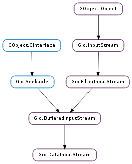

| static | new(base_stream) |
| get_byte_order() | |
| get_newline_type() | |
| read_byte(cancellable) | |
| read_int16(cancellable) | |
| read_int32(cancellable) | |
| read_int64(cancellable) | |
| read_line(cancellable) | |
| read_line_async(io_priority, cancellable, callback, *user_data) | |
| read_line_finish(result) | |
| read_line_finish_utf8(result) | |
| read_line_utf8(cancellable) | |
| read_uint16(cancellable) | |
| read_uint32(cancellable) | |
| read_uint64(cancellable) | |
| read_until(stop_chars, cancellable) | |
| read_until_async(stop_chars, io_priority, cancellable, callback, *user_data) | |
| read_until_finish(result) | |
| read_upto(stop_chars, stop_chars_len, cancellable) | |
| read_upto_async(stop_chars, stop_chars_len, io_priority, cancellable, callback, *user_data) | |
| read_upto_finish(result) | |
| set_byte_order(order) | |
| set_newline_type(type) |
| Name | Type | Flags | Description |
|---|---|---|---|
| byte-order | Gio.DataStreamByteOrder | r/w | The byte order |
| newline-type | Gio.DataStreamNewlineType | r/w | The accepted types of line ending |
None
| Name | Type | Access |
|---|---|---|
| parent_instance | Gio.BufferedInputStream | r |
Bases: Gio.BufferedInputStream
Data input stream implements Gio.InputStream and includes functions for reading structured data directly from a binary input stream.
| Parameters: | base_stream (Gio.InputStream) – a Gio.InputStream. |
|---|---|
| Returns: | a new Gio.DataInputStream. |
| Return type: | Gio.DataInputStream |
Creates a new data input stream for the base_stream.
| Returns: | the stream ‘s current Gio.DataStreamByteOrder. |
|---|---|
| Return type: | Gio.DataStreamByteOrder |
Gets the byte order for the data input stream.
| Returns: | Gio.DataStreamNewlineType for the given stream. |
|---|---|
| Return type: | Gio.DataStreamNewlineType |
Gets the current newline type for the stream.
| Parameters: | cancellable (Gio.Cancellable or None) – optional Gio.Cancellable object, None to ignore. |
|---|---|
| Raises: | GLib.GError |
| Returns: | an unsigned 8-bit/1-byte value read from the stream or %0 if an error occurred. |
| Return type: | int |
Reads an unsigned 8-bit/1-byte value from stream.
| Parameters: | cancellable (Gio.Cancellable or None) – optional Gio.Cancellable object, None to ignore. |
|---|---|
| Raises: | GLib.GError |
| Returns: | a signed 16-bit/2-byte value read from stream or %0 if an error occurred. |
| Return type: | int |
Reads a 16-bit/2-byte value from stream.
In order to get the correct byte order for this read operation, see Gio.DataInputStream.get_byte_order () and Gio.DataInputStream.set_byte_order ().
| Parameters: | cancellable (Gio.Cancellable or None) – optional Gio.Cancellable object, None to ignore. |
|---|---|
| Raises: | GLib.GError |
| Returns: | a signed 32-bit/4-byte value read from the stream or %0 if an error occurred. |
| Return type: | int |
Reads a signed 32-bit/4-byte value from stream.
In order to get the correct byte order for this read operation, see Gio.DataInputStream.get_byte_order () and Gio.DataInputStream.set_byte_order ().
If cancellable is not None, then the operation can be cancelled by triggering the cancellable object from another thread. If the operation was cancelled, the error Gio.IOErrorEnum.CANCELLED will be returned.
| Parameters: | cancellable (Gio.Cancellable or None) – optional Gio.Cancellable object, None to ignore. |
|---|---|
| Raises: | GLib.GError |
| Returns: | a signed 64-bit/8-byte value read from stream or %0 if an error occurred. |
| Return type: | int |
Reads a 64-bit/8-byte value from stream.
In order to get the correct byte order for this read operation, see Gio.DataInputStream.get_byte_order () and Gio.DataInputStream.set_byte_order ().
If cancellable is not None, then the operation can be cancelled by triggering the cancellable object from another thread. If the operation was cancelled, the error Gio.IOErrorEnum.CANCELLED will be returned.
| Parameters: | cancellable (Gio.Cancellable or None) – optional Gio.Cancellable object, None to ignore. |
|---|---|
| Raises: | GLib.GError |
| Returns: | a NUL terminated byte array with the line that was read in (without the newlines). Set length to a #gsize to get the length of the read line. On an error, it will return None and error will be set. If there’s no content to read, it will still return None, but error won’t be set. |
| Return type: | [int], length: int |
Reads a line from the data input stream. Note that no encoding checks or conversion is performed; the input is not guaranteed to be UTF-8, and may in fact have embedded NUL characters.
If cancellable is not None, then the operation can be cancelled by triggering the cancellable object from another thread. If the operation was cancelled, the error Gio.IOErrorEnum.CANCELLED will be returned.
| Parameters: |
|
|---|
The asynchronous version of Gio.DataInputStream.read_line (). It is an error to have two outstanding calls to this function.
When the operation is finished, callback will be called. You can then call Gio.DataInputStream.read_line_finish () to get the result of the operation.
| Parameters: | result (Gio.AsyncResult) – the Gio.AsyncResult that was provided to the callback. |
|---|---|
| Raises: | GLib.GError |
| Returns: | a NUL-terminated byte array with the line that was read in (without the newlines). Set length to a #gsize to get the length of the read line. On an error, it will return None and error will be set. If there’s no content to read, it will still return None, but error won’t be set. |
| Return type: | [int], length: int |
Finish an asynchronous call started by Gio.DataInputStream.read_line_async (). Note the warning about string encoding in Gio.DataInputStream.read_line () applies here as well.
| Parameters: | result (Gio.AsyncResult) – the Gio.AsyncResult that was provided to the callback. |
|---|---|
| Raises: | GLib.GError |
| Returns: | a string with the line that was read in (without the newlines). Set length to a #gsize to get the length of the read line. On an error, it will return None and error will be set. For UTF-8 conversion errors, the set error domain is %G_CONVERT_ERROR. If there’s no content to read, it will still return None, but error won’t be set. |
| Return type: | str, length: int |
Finish an asynchronous call started by Gio.DataInputStream.read_line_async ().
| Parameters: | cancellable (Gio.Cancellable or None) – optional Gio.Cancellable object, None to ignore. |
|---|---|
| Raises: | GLib.GError |
| Returns: | a NUL terminated UTF-8 string with the line that was read in (without the newlines). Set length to a #gsize to get the length of the read line. On an error, it will return None and error will be set. For UTF-8 conversion errors, the set error domain is %G_CONVERT_ERROR. If there’s no content to read, it will still return None, but error won’t be set. |
| Return type: | str, length: int |
Reads a UTF-8 encoded line from the data input stream.
If cancellable is not None, then the operation can be cancelled by triggering the cancellable object from another thread. If the operation was cancelled, the error Gio.IOErrorEnum.CANCELLED will be returned.
| Parameters: | cancellable (Gio.Cancellable or None) – optional Gio.Cancellable object, None to ignore. |
|---|---|
| Raises: | GLib.GError |
| Returns: | an unsigned 16-bit/2-byte value read from the stream or %0 if an error occurred. |
| Return type: | int |
Reads an unsigned 16-bit/2-byte value from stream.
In order to get the correct byte order for this read operation, see Gio.DataInputStream.get_byte_order () and Gio.DataInputStream.set_byte_order ().
| Parameters: | cancellable (Gio.Cancellable or None) – optional Gio.Cancellable object, None to ignore. |
|---|---|
| Raises: | GLib.GError |
| Returns: | an unsigned 32-bit/4-byte value read from the stream or %0 if an error occurred. |
| Return type: | int |
Reads an unsigned 32-bit/4-byte value from stream.
In order to get the correct byte order for this read operation, see Gio.DataInputStream.get_byte_order () and Gio.DataInputStream.set_byte_order ().
If cancellable is not None, then the operation can be cancelled by triggering the cancellable object from another thread. If the operation was cancelled, the error Gio.IOErrorEnum.CANCELLED will be returned.
| Parameters: | cancellable (Gio.Cancellable or None) – optional Gio.Cancellable object, None to ignore. |
|---|---|
| Raises: | GLib.GError |
| Returns: | an unsigned 64-bit/8-byte read from stream or %0 if an error occurred. |
| Return type: | int |
Reads an unsigned 64-bit/8-byte value from stream.
In order to get the correct byte order for this read operation, see Gio.DataInputStream.get_byte_order ().
If cancellable is not None, then the operation can be cancelled by triggering the cancellable object from another thread. If the operation was cancelled, the error Gio.IOErrorEnum.CANCELLED will be returned.
| Parameters: |
|
|---|---|
| Raises: | |
| Returns: | a string with the data that was read before encountering any of the stop characters. Set length to a #gsize to get the length of the string. This function will return None on an error. |
| Return type: |
Reads a string from the data input stream, up to the first occurrence of any of the stop characters.
Note that, in contrast to Gio.DataInputStream.read_until_async (), this function consumes the stop character that it finds.
Don’t use this function in new code. Its functionality is inconsistent with Gio.DataInputStream.read_until_async (). Both functions will be marked as deprecated in a future release. Use Gio.DataInputStream.read_upto () instead, but note that that function does not consume the stop character.
| Parameters: |
|
|---|
The asynchronous version of Gio.DataInputStream.read_until (). It is an error to have two outstanding calls to this function.
Note that, in contrast to Gio.DataInputStream.read_until (), this function does not consume the stop character that it finds. You must read it for yourself.
When the operation is finished, callback will be called. You can then call Gio.DataInputStream.read_until_finish () to get the result of the operation.
Don’t use this function in new code. Its functionality is inconsistent with Gio.DataInputStream.read_until (). Both functions will be marked as deprecated in a future release. Use Gio.DataInputStream.read_upto_async () instead.
| Parameters: | result (Gio.AsyncResult) – the Gio.AsyncResult that was provided to the callback. |
|---|---|
| Raises: | GLib.GError |
| Returns: | a string with the data that was read before encountering any of the stop characters. Set length to a #gsize to get the length of the string. This function will return None on an error. |
| Return type: | str, length: int |
Finish an asynchronous call started by Gio.DataInputStream.read_until_async ().
| Parameters: |
|
|---|---|
| Raises: | |
| Returns: | a string with the data that was read before encountering any of the stop characters. Set length to a #gsize to get the length of the string. This function will return None on an error |
| Return type: |
Reads a string from the data input stream, up to the first occurrence of any of the stop characters.
In contrast to Gio.DataInputStream.read_until (), this function does not consume the stop character. You have to use Gio.DataInputStream.read_byte () to get it before calling Gio.DataInputStream.read_upto () again.
Note that stop_chars may contain ‘\0’ if stop_chars_len is specified.
| Parameters: |
|
|---|
The asynchronous version of Gio.DataInputStream.read_upto (). It is an error to have two outstanding calls to this function.
In contrast to Gio.DataInputStream.read_until (), this function does not consume the stop character. You have to use Gio.DataInputStream.read_byte () to get it before calling Gio.DataInputStream.read_upto () again.
Note that stop_chars may contain ‘\0’ if stop_chars_len is specified.
When the operation is finished, callback will be called. You can then call Gio.DataInputStream.read_upto_finish () to get the result of the operation.
| Parameters: | result (Gio.AsyncResult) – the Gio.AsyncResult that was provided to the callback |
|---|---|
| Raises: | GLib.GError |
| Returns: | a string with the data that was read before encountering any of the stop characters. Set length to a #gsize to get the length of the string. This function will return None on an error. |
| Return type: | str, length: int |
Finish an asynchronous call started by Gio.DataInputStream.read_upto_async ().
Note that this function does not consume the stop character. You have to use Gio.DataInputStream.read_byte () to get it before calling Gio.DataInputStream.read_upto_async () again.
| Parameters: | order (Gio.DataStreamByteOrder) – a Gio.DataStreamByteOrder to set. |
|---|
This function sets the byte order for the given stream. All subsequent reads from the stream will be read in the given order.
| Parameters: | type (Gio.DataStreamNewlineType) – the type of new line return as Gio.DataStreamNewlineType. |
|---|
Sets the newline type for the stream.
Note that using Gio.DataStreamNewlineType.ANY is slightly unsafe. If a read chunk ends in “CR” we must read an additional byte to know if this is “CR” or “CR LF”, and this might block if there is no more data available.